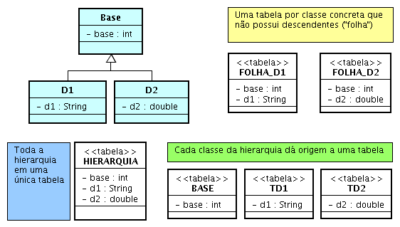

Herança
Conforme a ilustração, o mapeamento de hierarquia de classes pode ser
realizado usando uma das opções:
- criação de uma tabela para cada classe concreta
que não possui descendentes (destaque em amarelo);
- criação de uma única tabela para
toda a hierarquia (destaque em azul); e
- criação de uma tabela por
cada classe da hierarquia (destaque em verde).

A figura acima ilustra três possíveis mapeamento para a hierarquia formada
pela superclasse Base e suas subclasses
D1 e D2.
Uma tabela para cada classe "folha"
Na primeira abordagem uma tabela deverá ser criada para cada "folha"
da hierarquia. Nesta tabela deverão estar todos os atributos
herdados ao longo do caminho entre a classe mapeada e a raiz da
hierarquia. Convém ressaltar que toda classe em Java herda da classe
Object e, dessa forma, pode-se argumentar que esta primeira abordagem
quase sempre é empregada, embora a classe Object não exponha estado
a ser persistido. O mapeamento é trivial: cada classe tem o seu
próprio arquivo de mapeamento com a sua entrada class indicando
uma tabela específica. Esta facilidade tem um custo: não são possíveis
consultas polimórficas, ao contrário das abordagens seguintes. Os mapeamentos para este caso estão disponíveis em
D1.hbm.xml e D2.hbm.xml.
Uma única tabela para toda a hierarquia
A segunda abordagem permite consultas polimórficas. Ou seja, quando
se procurar por todas as instâncias de Base que
satisfazem algum critério, tanto instâncias de D1
quanto instâncias de D2 serão retornadas. Naturalmente,
também são possíveis consultas envolvendo apenas instâncias das
classes derivadas. A única tabela derivada de toda a hierarquia deverá
possuir um campo adicional, um discriminator, por meio do qual
será feita a associação de cada registro desta tabela com a classe correspondente.
Observe que em um mesmo registro existirão tantos campos quantos
forem necessários para acomodar uma instância de cada classe da hierarquia,
embora apenas uma será empregada. A classe correspondente será identificada
por este campo adicional. Cada classe da hierarquia será fornecida por
meio de um elemento subclass, conforme o mapeamento disponível
em Hierarquia.hbm.xml. Naturalmente,
para o cenário onde uma superclasse possui várias subclasses, cada uma
destas apresentendo considerável conjunto de atributos, tende a resultar
em baixo nível de utilização de memória, decorrente dos vários campos
de um registro que não serão empregados.
Uma tabela para cada classe da hierarquia
Na terceira abordagem uma tabela é criada para cada classe da hierarquia.
Nesta proposta, cada tabela só irá conter os atributos declarados na
classe em questão, o que não inclui aqueles derivados. A associação de
dois registros nesta abordagem é realizada pelo compartilhamento de
uma chave primária comum. O emprego desta abordagem é realizada por
meio do elemento joined-subclass. O mapeamento empregando
esta abordagem encontra-se disponível em
Subclasse.hbm.xml.
Copyright (c) 2006 Fábio Nogueira de Lucena